de-askew · User Guide
de-askew
A Media Image Straightener · TapeArchives · 0.9.0 beta
Turn a disc or cassette photograph into a head-on derivative. Keep the original capture as your preservation master.
Drop a selection and watch it process
- Install the prerequisites, then open de-askew.app on Mac or de-askew-gui.cmd on Windows.
- Drop files, a folder, or several folders. Nested folders are included. The app identifies discs and compact cassettes automatically. Originals are never edited.
- The workbench immediately queues all Before / After cards in filename order. A separate preview worker fills the left panes sequentially while conversion fills the right panes. Each card shows its filename and a timestamp. Use Open Input Image or Open Output Image; right-click either image to open it, reveal its folder or copy its path. The output menu also opens its JSON transformation log. Review notices remain part of the result.
- Look in
output beside each input. If that destination exists, the run uses output_YYYYMMDD_HHMMSS (and a numeric suffix if necessary). Preferences can select another relative path or one fixed location.
| Subfolder | Contents |
|---|
| output-images | 16-bit transparent PNG derivatives |
| output-previews | Small before/after views; background is for viewing only |
| output-json | Geometry, transform, orientation and optional source metadata logs |
Accepted: JPEG, PNG, TIFF, WebP, BMP, HEIC and HEIF. HEIC requires ImageMagick’s libheif delegate; only the primary still is used. Live Photo motion, depth and HDR gain maps are not reconstructed.
./de-askew "Photo folder" --preview
./de-askew first.heic second.jpg --auto-adjust --keep-metadata
./de-askew --set-output-relative output
./de-askew --set-output-fixed "/Volumes/Archive/Prepared"
./de-askew -h
Windows CMD: use de-askew.cmd. The app and CLI share preferences. Setup requires Python 3.12+, ImageMagick 7, and optionally Vision (Mac) or Tesseract. The Windows GUI installs TkinterDnD2 on first use. macOS builds are ad-hoc signed, not notarized.
Finishing is optional, and starts off
Contrast, Brightness and Color have independent switches; All adjustments enables all three. They run after the final crop and preserve alpha. Statistics use opaque pixels inside the cropped object. Color balance is limited to ±10% and needs neutral-pixel evidence. Exposure is bounded between ½× and 2×. These are visual adjustments, not measured restoration of the original artwork.
Keep metadata also starts off and requires ExifTool. It copies compatible writable tags, including GPS, and saves a readable source metadata inventory. Output orientation, dimensions and color declarations are corrected; old preview images are omitted. PNG cannot re-embed every HEIF/JPEG container field. Read copy warnings and the source inventory for what could not be carried across. Metadata does not change the image pixels.
Name barcode pairs
This Finishing checkbox starts off. Barcode reading itself always runs before cropping and writes literal values, symbology and source-pixel corners to the JSON log. Reading needs no OCR and preserves leading zeros.
For naming, inputs are sorted by case-insensitive filename, then full path across the whole dropped selection. Photograph and name consecutive front/back pairs in that order. If the back has barcode 00104305, its output becomes 00104305B.png and the immediately preceding, successfully converted, barcode-free front becomes 00104305A.png. Preview and log filenames follow. Original input filenames and hashes remain in the logs; original photos are never renamed.
A first-file back, failed previous input, already paired predecessor, multiple distinct barcode values, unsafe filename characters or an existing target name prevents pairing; the original output names remain and the reason is logged. Pairing does not skip failed inputs or cross batches. It assumes the code is on the back; it does not infer physical front/back identity. Only letters, digits, underscores and hyphens, up to 100 characters, are eligible for names. All readable values remain in logs regardless.
./de-askew "Tape photos" --preview --name-barcode-pairs
Both renamed sets are published before old aliases are removed. A crash can leave duplicate derivative aliases; inspect logs before cleaning them up.
Geometry first, crop last
Both media types export without added padding. After applying the geometric alpha mask, the renderer removes only completely transparent exterior rows and columns. Every nonzero feather pixel and the rounded corner cutouts remain; logged positions are shifted to match the tight canvas. Previews add no border.
Cassettes: find long physical shell edges, fit straight lines, intersect adjacent lines, and apply a planar homography to the nominal 100.4 × 63.8 mm frame. Short guide-rail projections do not define the frame. Only then apply the analytic rectangle, four tangent corner arcs and a one-pixel feather. All four corners start with one circular radius, jointly estimated from broad arc support after rectification. Near-frontal views keep identical radii. Only strongly supported steep-view residuals permit local radius changes, capped at 8%. Unresolved arcs retain the shared template (or a 2 mm size prior) and are explicitly logged as inferred. The size prior and angle threshold are heuristics; shell designs vary. A corner crop is not proof that its curve was measured.
When nearly parallel shell sides give an implausibly wide cassette, the nominal ratio proposes a narrow search for a missing long outer edge. A faint measured line must have distributed support and preserve reel-pair evidence. This catches a high-contrast label mistaken for the shell; it does not invent a boundary or impose the raw-photo ratio on a deep perspective view. The recovery and its assumptions are logged.
Discs: use the physical rim and spindle aperture together. A single ellipse is insufficient to uniquely recover an arbitrary perspective view. Two coplanar concentric circles constrain a homography; output circles use 15/120 or 15/80 radius ratio. Printing may be off-center, so its edge must not replace the clear physical rim. Missing or hidden aperture evidence can make automatic calibration fail.
Perspective rectification makes one planar face head-on. Lens undistortion corrects barrel/pincushion curvature; it is not synonymous with parallax. Depth parallax comes from raised lips, recessed reels and visible sidewalls. One photo and one planar warp cannot remove it or recover hidden surfaces. Lens distortion can affect a head-on photo too; severe camera angle is not its cause. Phone names or focal lengths alone do not provide valid distortion coefficients. Lens correction is off by default.
A clear cassette still shows the photographed cloth through its shell. A disc inside a sleeve still shows sleeve glare. A projection outside the cassette body is cropped; a raised area inside it remains a 2D approximation. Blank discs have no meaningful text-up direction. With unavailable OCR, discs search −45°…+45° for text-like straightness; weak evidence keeps the angle unchanged, and the upside-down choice remains unresolved.
Requested samples: actual before / after
These are development examples, not an independent accuracy benchmark. Finishing adjustments and metadata copying were off. The checkerboard is a viewer background, not part of the transparent PNG. Unresolved cases are included rather than disguised as successful automatic conversions.
Audio-Kassette_und_IPod.jpg
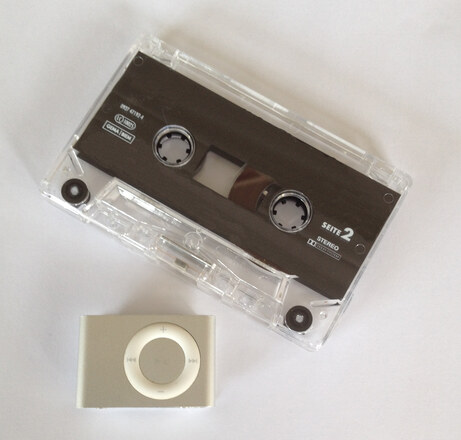
Before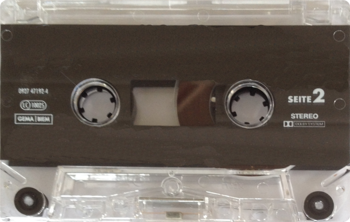
After · review requiredShared circular corner template: 1.95 mm. 0 corners support the template locally; 4 inferred. Single-plane and edge-alignment review remains necessary.
Martina · CC BY 2.0 · Source / attribution
CPT_4200_cassette.jpg
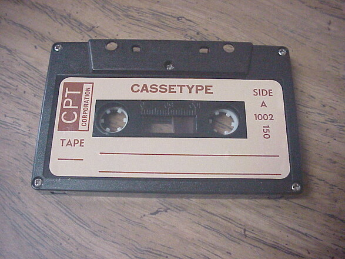
Before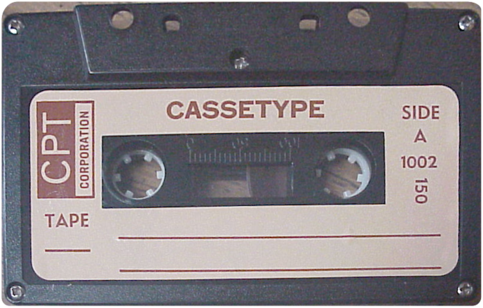
After · review requiredShared circular corner template: 1.79 mm. 1 corners support the template locally; 3 inferred. Single-plane and edge-alignment review remains necessary.
That-RickWeller · CC BY-SA 4.0 · Source / attribution
Compact_Cassette_07.jpg
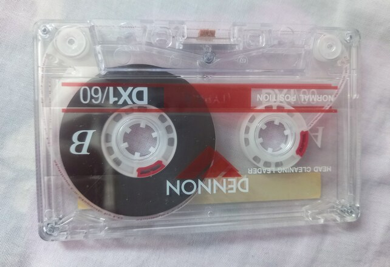
Before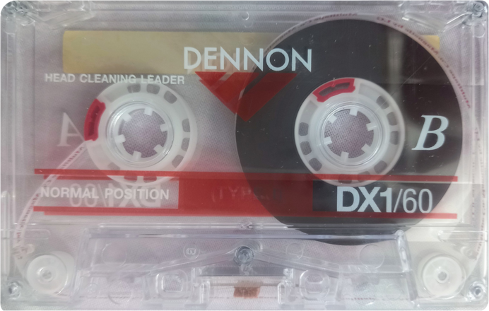
After · review requiredShared circular corner template: 3.07 mm. 0 corners support the template locally; 4 inferred. Single-plane and edge-alignment review remains necessary.
Shams948 · CC0 · Source / attribution
DVD-Video_bottom-side.jpg
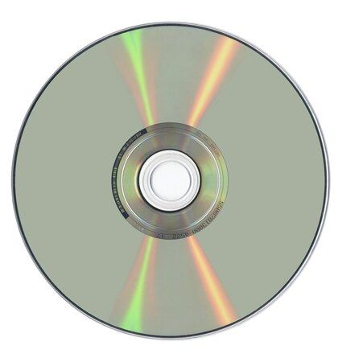
BeforeAfter · review requireddisc size ambiguous; too little readable text; insufficient orientation evidence kept original angle
Ocrho · Public domain · Source / attribution
DVD.png
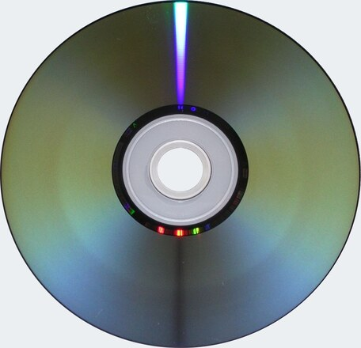
Before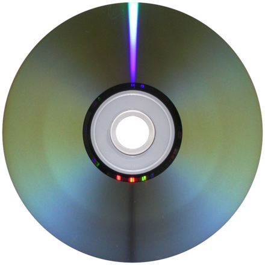
After · review requiredno readable text
User:Wanted, User:Lorian · CC BY-SA 3.0 · Source / attribution
Disc_Crack_From_Case.jpg
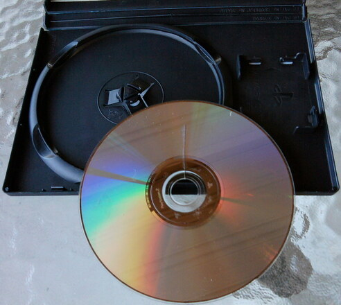
BeforeAfter · review requiredcontrast assisted geometry review; ellipse incomplete edge support; no readable text
CRTGAMER · Public domain · Source / attribution
Flexplay_disc.png
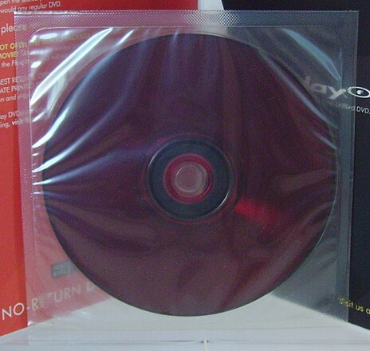
BeforeAutomatic geometry unresolvedThe sleeve creates crossing reflections and conceals the rim. Remove the sleeve and recapture; no invented edge or cleaned artwork is shown.
The sleeve creates crossing reflections and conceals the rim. Remove the sleeve and recapture; no invented edge or cleaned artwork is shown.
Museum of Obsolete Media · CC BY-SA 4.0 · Source / attribution
IMG_2726.jpg
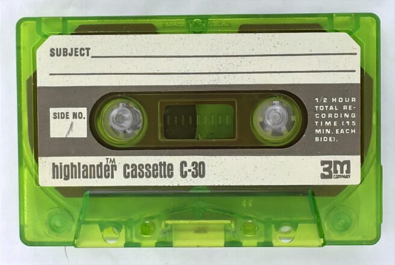
Before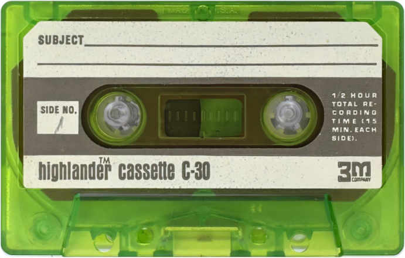
After · review requiredShared circular corner template: 2.91 mm. 2 corners support the template locally; 2 inferred. Single-plane and edge-alignment review remains necessary.
Provided by TapeArchives · Owner-provided sample; separate image rights retained · Provided by TapeArchives; included at the project owner’s request.
IMG_2794.jpg
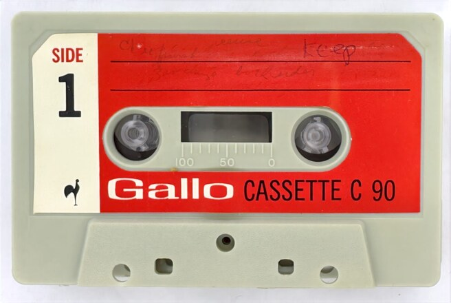
Before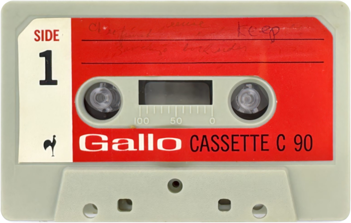
After · review requiredShared circular corner template: 3.75 mm. 0 corners support the template locally; 4 inferred. Single-plane and edge-alignment review remains necessary.
Provided by TapeArchives · Owner-provided sample; separate image rights retained · Provided by TapeArchives; included at the project owner’s request.
Nanay_Folk_Tales_and_Legends_(Disc).png
BeforeAfter · review required
contrast assisted geometry review
Unknown authorUnknown author · Public domain · Source / attribution
Đĩa_DVD.jpg
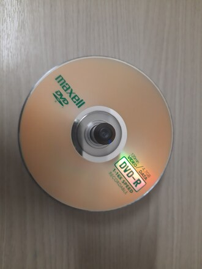
BeforeAutomatic geometry unresolvedThe hole is obscured by a support. Its larger visible hub ring can be mistaken for an 80 mm-disc aperture. A complete visible physical hole is needed; a perfect output mask would not prove a correct calibration.
The hole is obscured by a support. Its larger visible hub ring can be mistaken for an 80 mm-disc aperture. A complete visible physical hole is needed; a perfect output mask would not prove a correct calibration.
Lê Huỳnh Bộ · CC BY-SA 4.0 · Source / attribution
Review and recover
Inspect the rim, hole and all four cassette corners at full size. If a straight crop cuts real shell material or leaves a wedge of background, revisit the fitted source lines; increasing feather is not a geometry repair. Compare measured/inferred corner flags. Transparent material, bevels, shallow shadows, occlusion and low resolution can fool the detector.
For a cassette, reviewed --cassette-corners x1,y1,x2,y2,x3,y3,x4,y4 seeds local straight-edge refinement in EXIF-normalized source coordinates. It is not a filename preset. --cassette-crop rectangle disables arc cropping. --angle 0 or --angle 180 chooses the final cassette direction. Disc --disc-size 120 or 80 resolves a known physical format; it does not fix a hidden hole.
Exit 0: no review flags. Exit 2: derivatives saved with review notices. Exit 1: at least one failure; other files continue. Each failure gets a JSON record. Existing source alpha is preserved. The archive should retain both the original and the derivative’s JSON log.
Image credits and separate licenses · Machine-readable sample outcomes · Source and detailed technical documentation